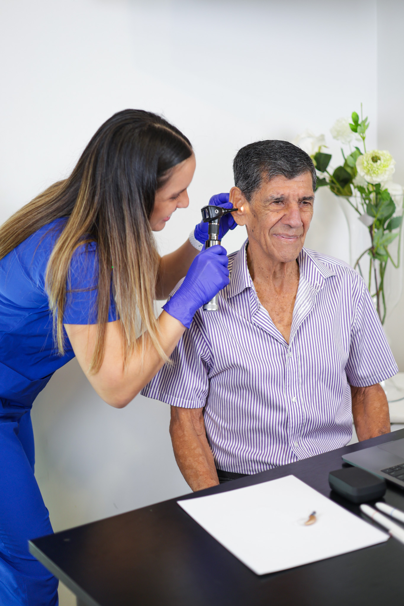
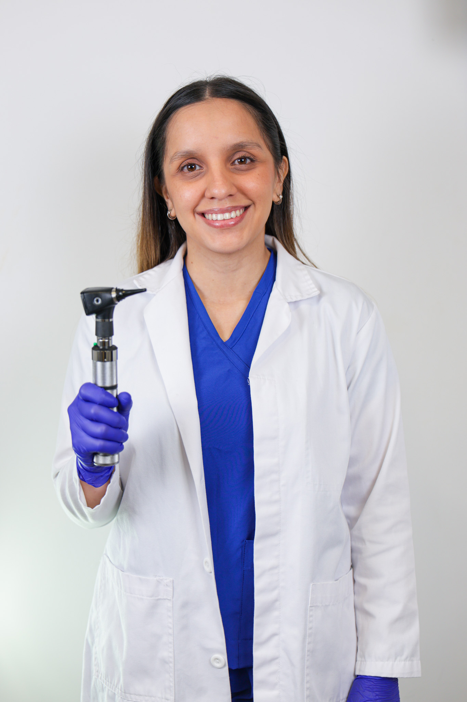
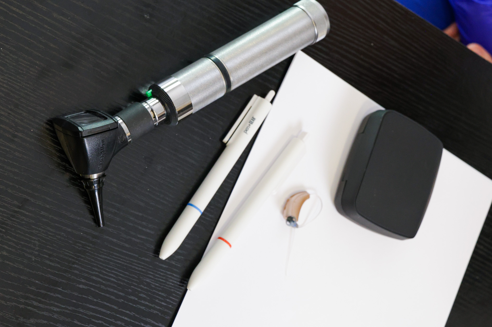

Evaluación Auditiva
Diagnóstico completo de tu capacidad auditiva
Clínica especializada en audiología con atención personalizada y tecnología de punta
Agendar cita — 8615-4823

Diagnóstico completo de tu capacidad auditiva

Reducción de ruido, conectividad celular y ajustes personalizados
Eliminación segura de cerumen para mejorar tu audición
AUDIVIA es una clínica de audiología costarricense fundada con el propósito de brindar atención auditiva especializada, cálida y accesible. Nuestro equipo está liderado por la Audióloga Karol Vega, con amplia experiencia en diagnóstico y rehabilitación auditiva. Contamos con tecnología de punta y un ambiente diseñado para que cada paciente se sienta cómodo y bien atendido.